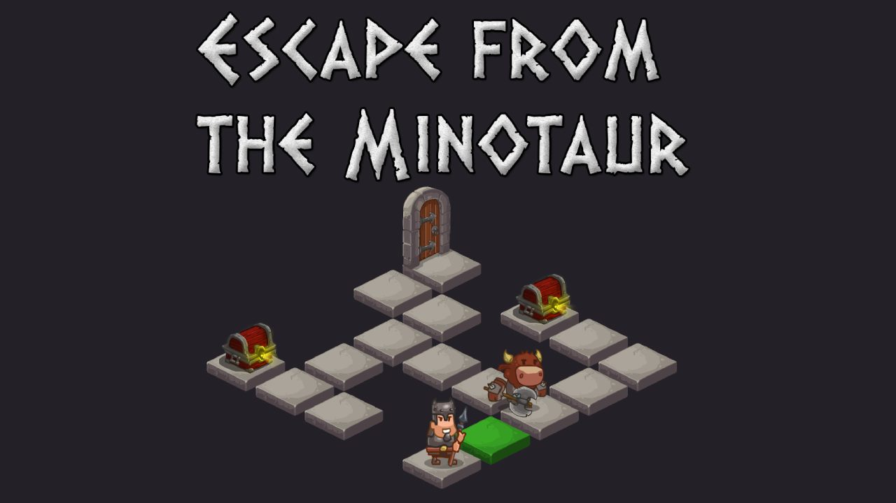
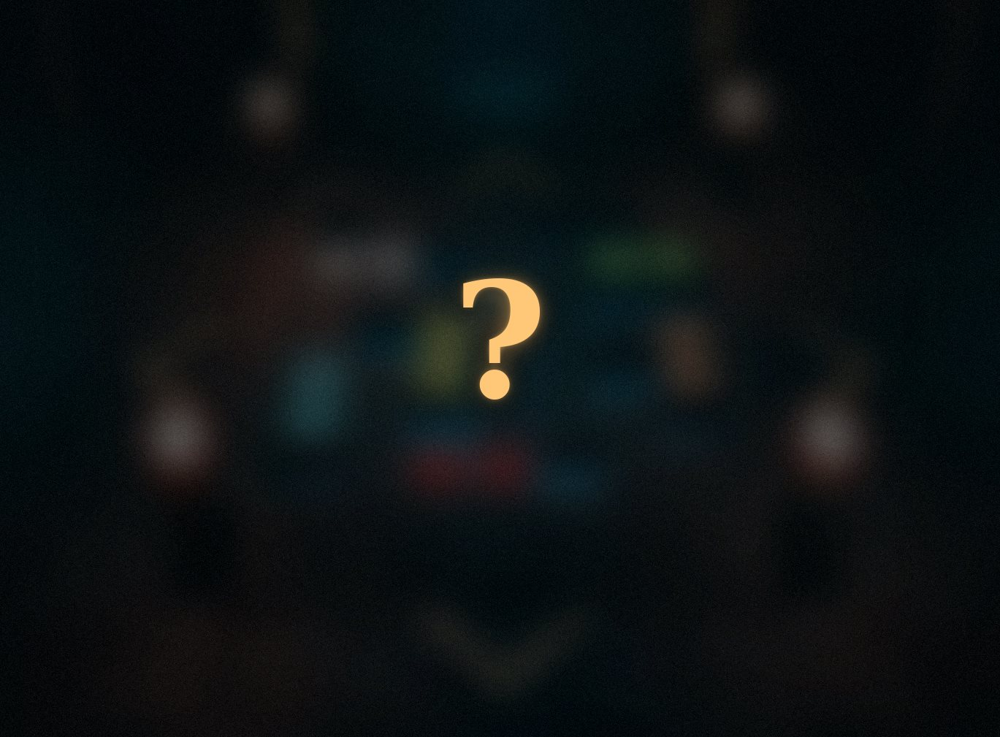

Escape from the Minotour
Controle Teseu, pegue as chaves e escape do Minotauro em 12 fases
Bem-vindo(a) ao meu site! Aqui registro os games que já zerei e os projetos de jogos que desenvolvo.
Obrigado pela visita.

Controle Teseu, pegue as chaves e escape do Minotauro em 12 fases

Novo projeto em desenvolvimento. Mais detalhes em breve.